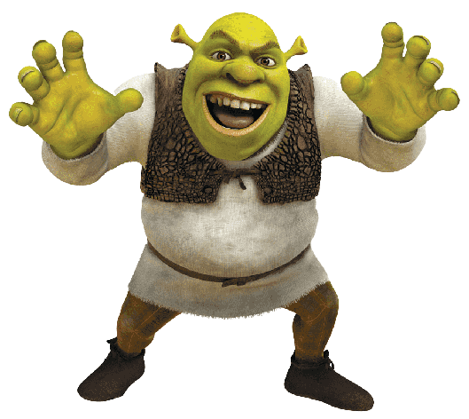
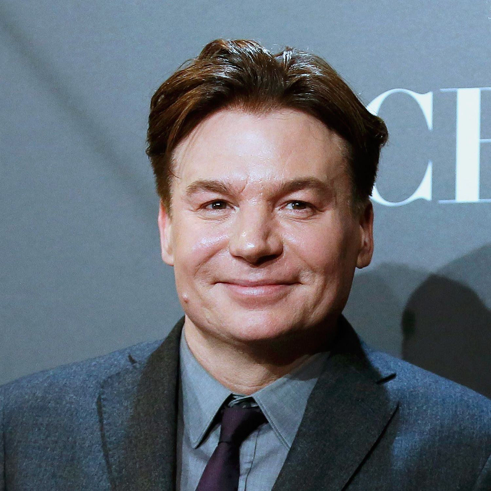
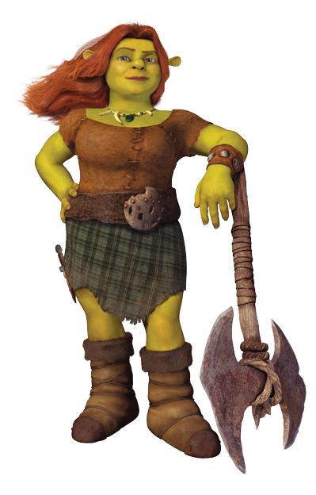
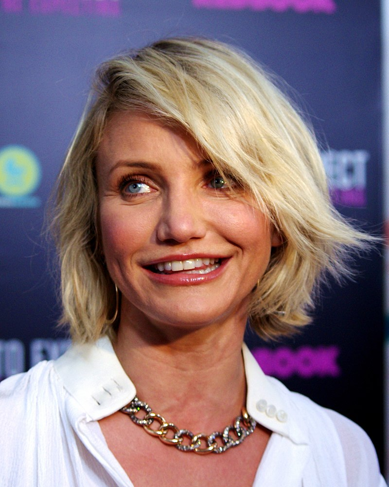
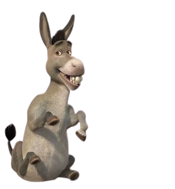
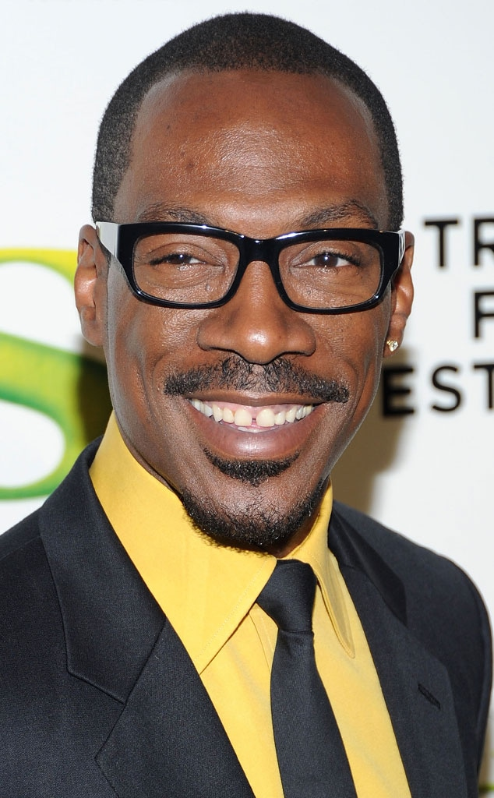
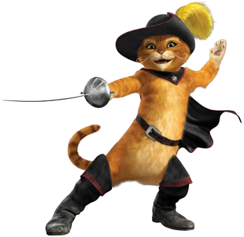
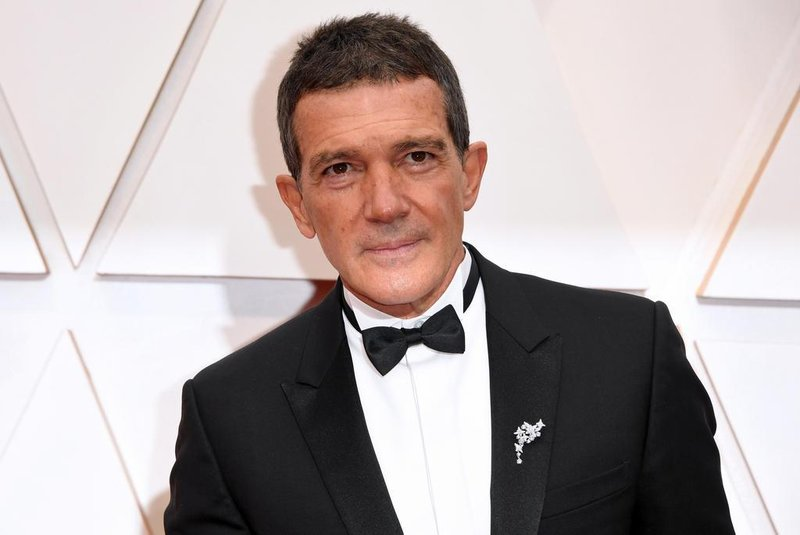
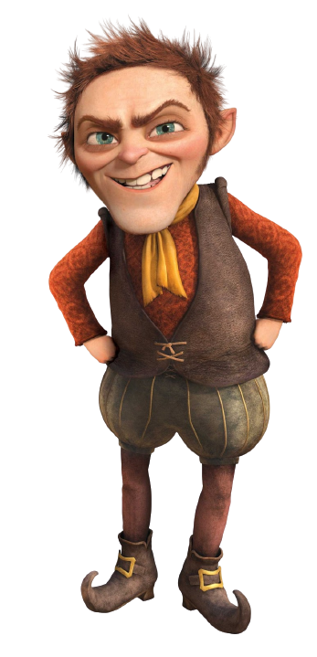
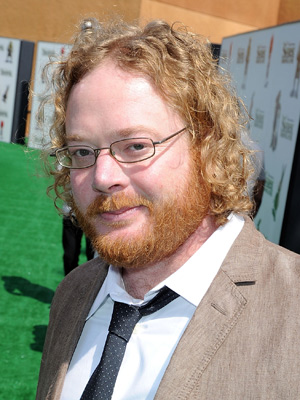

SHREK PARA SEMPRE
Personagens e Dubladores
Voltar a página principal
Personagens Principais
Shrek

Dublador

Mike Myers
- Idade: 59 anos
- Nacionalidade: Scarborough, Toronto, Canadá
- Trabalhos Famosos: Austin Powers - O Agente Misterioso (1997)
Princesa Fiona

Dubladora

Cameron Diaz
- Idade: 49 anos
- Nacionalidade: San Diego, Califórnia, EUA
- Trabalhos Famosos: O Amor Não Tira Férias (2006)
Burro

Dublador

Eddie Murphy
- Idade: 61 anos
- Nacionalidade: Brooklyn, Nova Iorque, Nova York, EUA
- Trabalhos Famosos: O Guarda-Fraldas (2003)
Gato de Botas

Dublador

Antonio Banderas
- Idade: 61 anos
- Nacionalidade: Málaga, Espanha
- Trabalhos Famosos: Uncharted (2022)
Rumpelstiltskin

Dublador

Walt Dohrn
- Idade: 51 anos
- Nacionalidade: Condado de Orange, Califórnia, EUA
- Trabalhos Famosos: Os Pinguins de Madagáscar (2014)
Voltar ao topo